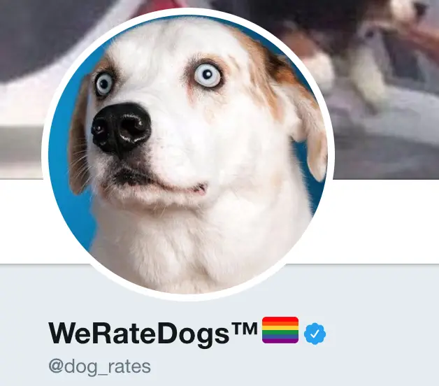

I decided to take up the analytics challenge from Olanrewaju Oyinbooke and as well as improve my own skills and
gain more experience as I work on this project.
PROBLEM STATEMENT
SellCheapy Retail is a chain of department stores that sells a wide range of products, including bikes and
different components. Despite having a large customer base, the company has been struggling to increase sales
in recent years. The management team is looking to use data analysis to understand customer spending patterns
and make changes to their sales and marketing strategies to improve performance.
The company collected data on customer demographics, purchasing history, and other relevant information over
the course of a year. The data includes information on the products purchased, the price paid, and the date of purchase, etc.
I’ll be using the provided dataset to understand customer spending patterns and make changes to their sales and
marketing strategies to improve performance...

This data set contains information about 10,866 movies collected from The Movie Database (TMDb), including user ratings and revenue.

In this project I gathered data from multiple sources(WeRateDogs twitter account, downloaded programmatically),
I wrangled and cleaned this data join me to see what I did.

This an exploratory data analysis on the WHO COVID-19 world dataset.
This data cleaning and analysis will be done using Python(pandas library specifically) after which the final visualization will be done with Power BI, and I will be focusing on how the virus has affected Africa.
Starting of I will be importing the neccesary libraries and the dataset.

In this project I used the survey data from Alex Freberg .. I cleaned the data using python pandas & numpy before exporting
the data back as an Excel file to be used for final analysis and visualization on PowerBI Link to
Dataset
Inspiration for this project is gotten from Alex Freberg big thanks to him.!!!!
Here's a link to his Youtube : Alex Freberg YT channel.
Each week the CFPB sends thousands of consumers’ complaints about financial products and services to companies for response.
Those complaints are published here after the company responds or after 15 days, whichever comes first.
By adding their voice, consumers help improve the financial marketplace.
The dataset has over 500,000 complaints.
Using Tableau I'm going to draw out insights and answer a few questions that am interested in..
In this project, I worked on a real-world dataset of the google play store,
one of the most used applications for downloading android apps.
This project aims on cleaning the dataset, analyze the given dataset,
and mining informational quality insights. This project also involves visualizing the data to better and easily understand trends and different categories.
Project Description:
This project will helped me understand how a real-world database is analyzed using SQL,
how to get maximum available insights from the dataset,
pre-process the data using python for a better upcoming performance,
how a structured query language helps us retrieve useful information from the database,
and visualize the data with the power bi tool.
The Project will consist of 2 modules as directed by HiCounsellor the organizers of this challenge:
Module 1: Pre-processing, Analyzing data using Python and SQL.
Module 2: Visualizing data using Power bi..